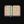

| - | Character | Speed | - | - | Score | - |
|---|---|---|---|---|---|---|
| Aria | 22:02.55 | 1057th | 3554 | 1384th | ||
| Bard | 18:18.99 | 2027th | - | - | ||
| Bolt | - | - | 1170 | 1652nd | ||
| Cadence | - | - | - | - | ||
| Diamond | - | - | - | - | ||
| Dorian | 29:16.85 | 1602nd | 2094 | 1423rd | ||
| Dove | - | - | - | - | ||
| Eli | - | - | - | - | ||
| Mary | 24:16.66 | 762nd | 3468 | 835th | ||
| Melody | - | - | - | - | ||
| Monk | - | - | - | - | ||
| Nocturna | - | - | - | - | ||
| Tempo | 10:27.31 | 596th | 4518 | 909th | ||
| Coda | - | - | - | 581st | ||
|  | Story | - | - | - | - | |
| 9char | - | - | - | - | ||
| 13char | - | - | - | - |
| - | Character | HrdSp | NRSp | RndSp | PhsSp | MysSp | - | HrdSc | NRSc | RndSc | PhsSc | MysSc | DLess |
|---|---|---|---|---|---|---|---|---|---|---|---|---|---|
| Aria | - | - | - | - | - | - | - | - | - | - | 0-4-3135th | ||
| Bard | - | - | 25:52.99857th | - | - | - | - | 54991248th | - | - | 49-1-110th | ||
| Bolt | - | - | - | - | - | - | - | - | - | 107135th | - | ||
| Cadence | - | - | 31:08.88812th | - | 30:29.51307th | - | - | 27571981st | - | 1935724th | - | ||
| Diamond | - | - | - | - | - | - | - | 955465th | - | - | 0-3-396th | ||
| Dorian | - | - | 14:38.2225th | - | - | - | - | 360313th | 22127th | 43434th | 22-3-310th | ||
| Dove | - | - | - | - | - | - | - | - | 61014th | - | - | ||
| Eli | - | - | - | - | - | - | - | - | - | - | 2-1-241st | ||
| Mary | - | - | - | - | - | - | - | - | - | - | 2-2-128th | ||
| Melody | - | - | - | - | - | - | - | - | - | - | - | ||
| Monk | - | - | 26:01.8418th | - | 35:27.1416th | - | - | 73705th | - | 53614th | 5-1-121st | ||
| Nocturna | - | - | - | - | 36:49.44184th | - | - | - | - | 3558185th | 25-2-311th | ||
| Tempo | - | - | - | - | - | - | - | 255157th | - | 54642nd | 0-5-365th | ||
| Coda | - | - | - | - | - | - | - | - | - | - | - |
Last Updated:2021/05/14 07:57